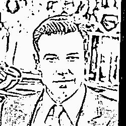
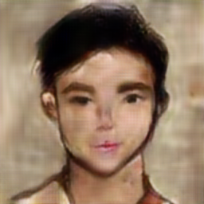

我被自己GAN哭了
近几周疯狂搞GAN的感想
我当初是真的万万没想到就这学期选的课怎么就跟GAN扯上关系了！WAT？GAN是什么？
哦哦，介绍一下，GAN全称是Generative Adversarial Network，中文名叫生成对抗网络，一般用于图片的生成。它的种类很多，包括PatchGAN，CGAN，InfoGAN等等，也包括我用的pix2pix。但是他们的主体思路是一致的，就是设置两个神经网络，一个叫Generator，另一个叫Discriminator。Generator专门生成图片，discriminator专门用于鉴别图片是生成的还是原始的，两个网络共同训练成长，相互促进，最后达到良好的效果。具体就不细讲了，我是来吐槽的！DAMN IT！
其实GAN的大致原理和思路不难懂，但是挡在我面前的三座大山着实令人抓狂！他们分别是：训练集的获取，模型具体结构的确定(卷积层的各种hyperparameter...)以及机器性能的问题。
我们的final project想要做的是将卡通人脸转化成现实中的人脸。当初提到这个idea就感觉到了满满的ambition，也不知道自己是怎么搞下去的。
直接训练网络将卡通人脸变成现实中的显然不大现实，因为原始的卡通图片噪声太大，神经网络难以提取准确的提取面部特征。所以问题转化成面部什么特征需要提取，想来想去觉得轮廓是主要的。所以就找edge detection相关的code和algorithm。在试过各种之后，点名批评OpenCV自带的边提取，效果不好，再点名表扬Google的XDoG！效果很不错！如下图：

所以这样我们就可以自己生成训练集辽！
所以就确定了想法，加一个intermediate step，从 cartoon$\rightarrow$reality 变成了 cartoon$\rightarrow$edges$\rightarrow$reality。这样我们可以先降低图像的噪声，提取面部的一些重要的轮廓特征，这样能够大幅提升训练神经网络生成对应人脸的可行性。
然后就是神经网络的结构。归根结底，pix2pix只是确定了网络图的流向等等，具体网络的结构还是要靠自己敲定。所以我敲定了一二周，敲定失败了，所以就理直气壮 (划掉) 地用了官方原始的U-Net (用的是残差block堆起来的) 作为Generator (原本是用于生成街景的) ，因为想想本质上都是image translation，所以应该是没有太大问题的。至于Discriminator也就理所应当 (也划掉) 地用了官方的Convolutional “PatchGAN” Classifier，大致就是针对图像的各个ROI (image patches) 进行classify。
这块是真的搞死个人，课上学的Autoencoder啥的根本没用上。
最后是机器性能，不得不喊一句MMP。在自己的辣鸡2017版MBA上跑了一整天才训练了寥寥几个epoch的情况下，我想起了平时用的colab，搭载个GPU快得飞起来。我计时器算了一下，大致也就是本机的几百倍速度吧2333333。而且还是免费的，白嫖的感觉真好：）
最后在colab上跑了半天不到用小样本 (600多) 训练了200个epoch，感觉效果还行 (基于小样本短时间的前提) 。
先放一下根据上面的那张照片提取的线条做出来的图（他不在训练集里）
然后放一下随便抓的一张cartoon做的：
不对比看我也没发现生成图脖子这里给凭空生成的类似立领的东西原来原图里是没有的！
然后我随便请了一个朋友画个人脸 (线条画) ，然后尝试用模型生成了一下，然后我枯了。

尤其是这个嘴真鬼畜。总结了一下，一是因为这个网络还是训练集太小，训练的时间也不够长，能力有限。二是因为这毕竟是人画的，不是从图片里提取的，所以结构总会不够逼真，显得比较不像真人那么shuai (第四声) 。头发感觉还行吧。
总结完毕，搞了一个月还算可以，队友又提出了下一步的针对性优化，GAN TMD！(在此之前，打一把LOL奖励一下自己)